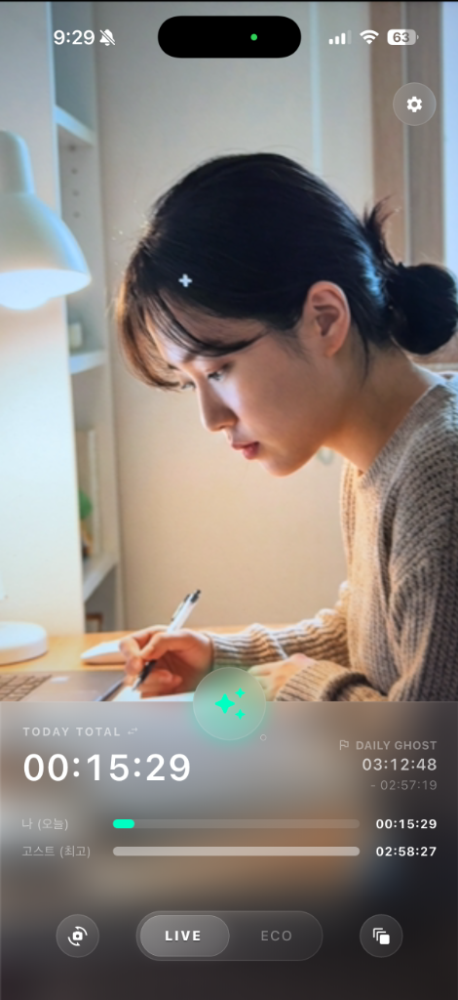

고객 지원 (Support)
클라크를 사용해 주셔서 감사합니다. 앱 사용 중 궁금한 점이나 문제가 발생하면 아래 채널로 문의해 주세요.

실시간
AI 집중도 측정
자주 묻는 질문 (FAQ)
카메라 권한이 왜 필요한가요?
앱의 핵심 기능인 AI 집중도 분석 및 타임랩스 비디오 생성을 위해 필요합니다. 클라크는 사용자가 실제
공부 중인지 감지하고, 공부가 끝나면 멋진 기록 영상을 만들어 드립니다.
내 얼굴 데이터가 서버로 전송되나요?
아니요. 모든 인공지능 분석은 사용자의 스마트폰 내(On-Device)에서만 이루어집니다. 영상 피드나 얼굴 데이터는 외부 서버로 절대
전송되지 않으며, 당사도 접근할 수 없습니다.
공부 중 스마트폰이 뜨거워져요.
실시간으로 AI 모델을 구동하기에 다소 열이 발생할 수 있습니다. 발열을 줄이려면 '절전 모드(ECO)'를 활성화해 주세요. 화면 밝기를
줄이고 연산을 최적화하여 배터리와 발열을 효과적으로 관리합니다.
타임랩스 영상이 만들어지지 않아요.
최소 공부 시간(1분) 이상 기록해야 영상이 생성됩니다. 또한 기기의 저장 공간이 충분한지, 카메라 권한이 항상 허용되어 있는지 확인해
주세요.
다른 사람이 카메라에 잡히면 어떻게 되나요?
클라크는 특정 인물을 식별하는 것이 아니라 '사람(Person)'의 형태를 감지합니다. 가급적 사용자 본인만 나오는 환경에서 공부하시는 것이 가장 정확한 측정 결과를
제공합니다.
문제 해결 (Troubleshooting)
- 인식 실패: 너무 어두운 환경이거나 카메라 렌즈상에 이물질이 있는지 확인해 주세요.
- 알림 문제: 휴식 시간 종료 알림이 오지 않는다면 시스템 설정에서 앱 알림 권한을 확인해 주세요.
본 페이지의 내용은 최신 개인정보 처리방침을 준수합니다.
개인정보 처리방침 (Privacy Policy)
마지막 업데이트: 2026년 1월 31일
개인정보 처리방침
'클라크'(이하 '앱')는 사용자의 개인정보를 소중하게 생각하며, 관련 법령을 준수합니다. 본 방침은 앱이 제공하는 집중력
분석 및 타임랩스 기록 기능과 관련하여 어떠한 정보를 어떻게 처리하는지 설명합니다.
1. 처리하는 데이터 항목
- 카메라 데이터: AI를 통한 집중도 확인 및 타임랩스 영상 생성을 위해 카메라 접근 권한이
필요합니다. 본 앱은 얼굴 식별이나 생체 정보(Biometrics)를 수집하지 않습니다. AI 모델은 오직 화면 내 '인물(Person)'의
존재 여부 및 영역만을 감지(Segmentation)합니다.
- 이미지 및 비디오: 공부 세션 중 촬영된 스냅샷과 생성된 타임랩스 영상이 기기에 저장됩니다.
- 앱 사용 기록: 공부 시간, 휴식 시간, 통계 정보 등.
2. 데이터 처리 및 보관 (중요)
- 로컬 처리 (Local Processing): 카메라 통해 입력되는 영상 데이터는 온디바이스
AI(TFLite)를 통해 사용자 기기 내에서만 실시간으로 처리됩니다. 외부 서버로 전송되거나 공유되지 않습니다. 모든 분석은 비식별화된
상태로 수행됩니다.
- 로컬 저장 (Local Storage): 생성된 스냅샷 이미지 및 타임랩스 비디오 파일은 사용자의
기기 내부 저장소에만 저장됩니다. 사용자가 직접 삭제하거나 앱을 삭제하기 전까지 기기에 안전하게 보관됩니다. 우리(개발자)는 이 데이터에 접근할 수 있는 권한이나 기술적
수단이 없습니다.
3. 데이터 수집 목적
- 앱의 핵심 기능인 AI 집중도 분석 제공
- 사용자 공부 기록 보존 및 타임랩스 영상 생성
- 학습 통계 및 대시보드 제공
4. 제3자 제공 및 위탁
앱은 사용자의 개인정보를 외부에 제공하거나 위탁하지 않습니다. 모든 데이터 처리는 사용자 기기 내에서 완결됩니다.
5. 사용자의 권리
사용자는 언제든지 앱 설정을 통해 카메라 접근 권한을 철회하거나, 저장된 공부 기록 및 영상 데이터를 삭제할 수 있습니다.